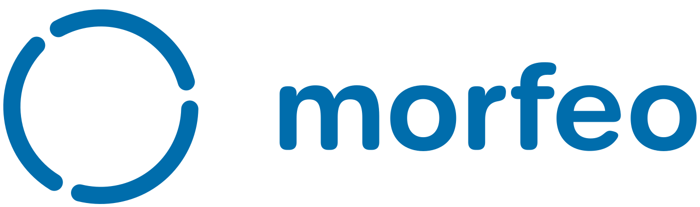
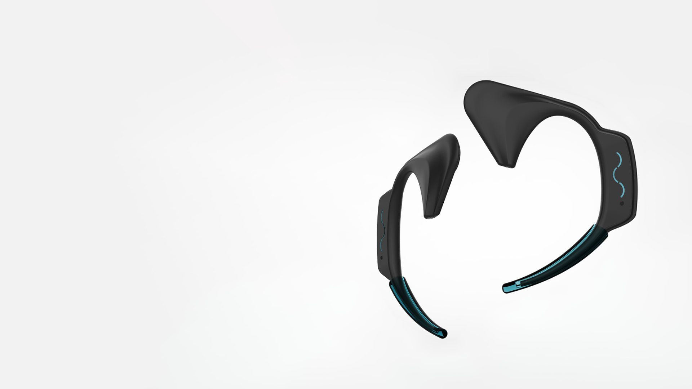
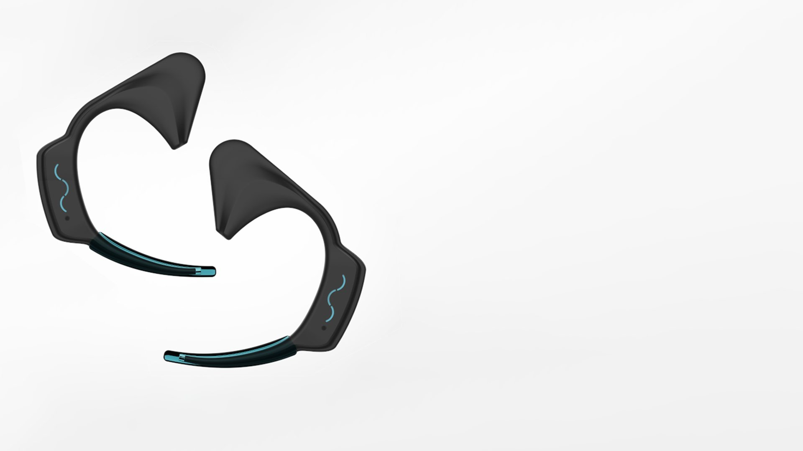
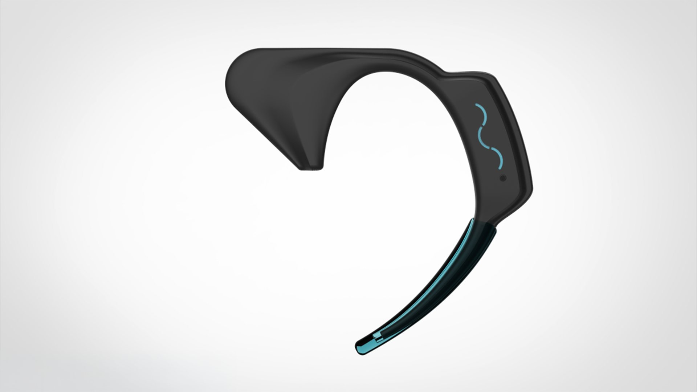
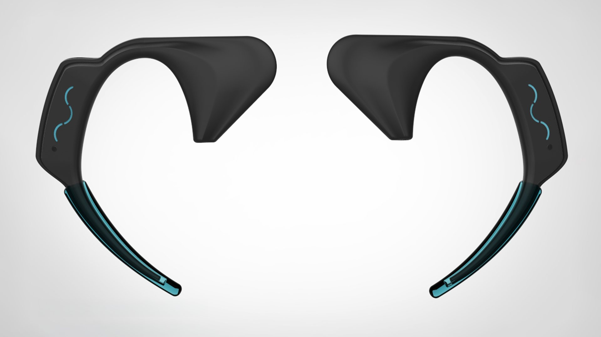
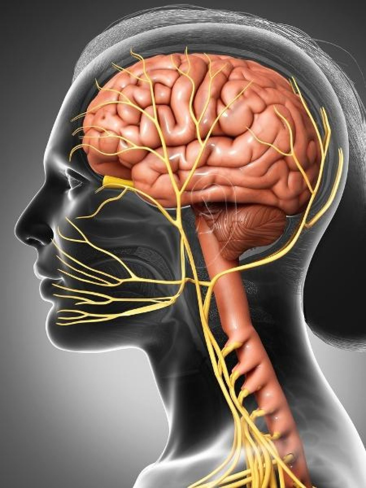
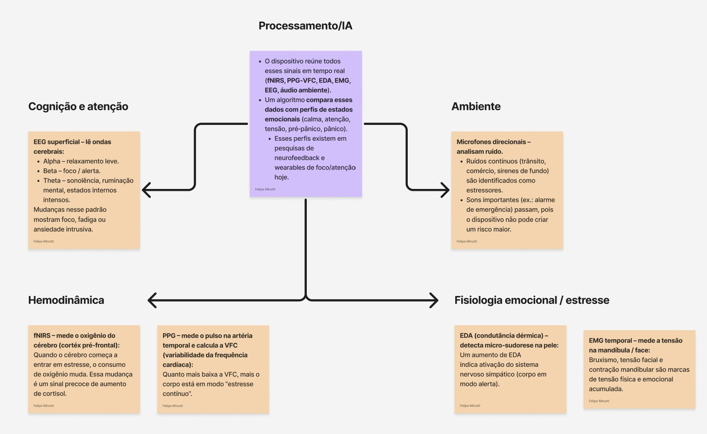
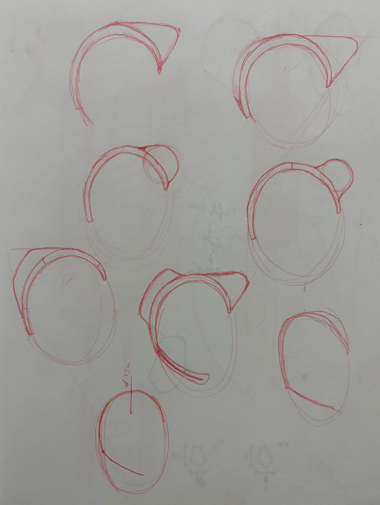
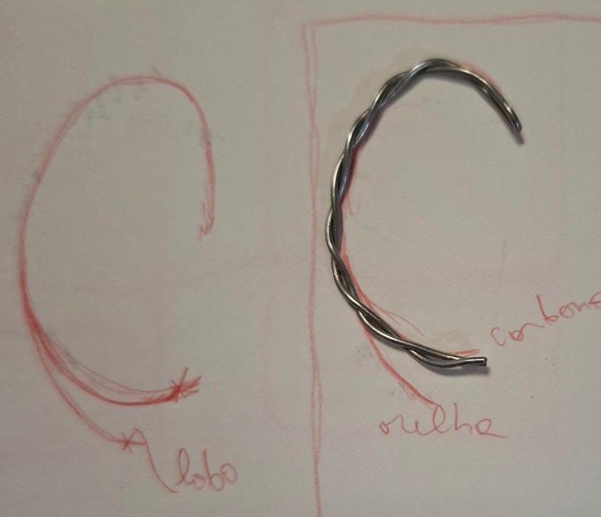
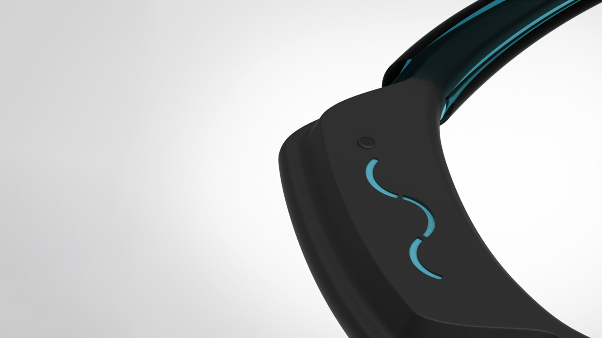

Ação passiva
Ativa o cancelamento de ruído e reduz a frequência cardíaca por arrastamento.

Um wearable de têmpora que percebe a crise de ansiedade antes do próprio usuário e responde no nervo vago, do ruído marrom à desaceleração do coração.

Renders



Contexto
27%
da população brasileira relata episódios de ansiedade.
A hiperconectividade é uma das principais causas. A comparação constante e o estímulo à exposição nas redes sociais têm se mostrado cada vez mais nocivos: as plataformas abandonaram a proposta de fortalecer laços para fabricar influenciadores, sustentados por algoritmos de engajamento.
O morfeo parte de uma hipótese distópica: se o mundo seguir esse caminho, a ansiedade vai se tornar ainda mais comum. O produto é desenhado para esse futuro.
Pesquisa · O nervo vago
A pesquisa apontou um papel pouco explorado da têmpora na redução, e até na interrupção, dos sintomas da ansiedade.
A chave está na relação entre o ramo mandibular, que passa pela têmpora, e o nervo vago. Vibrações emitidas nessa região podem desde ajudar o usuário a voltar ao estado de calma até, nos casos mais graves, forçar a desaceleração do coração.

Pesquisa · Sensores
O dispositivo precisava perceber a crise antes do usuário e, logo em seguida, emitir as vibrações com um motor. Para isso, mapeei os sensores de cognição, ambiente, hemodinâmica e fisiologia emocional.
A maior parte deles já existe em tecnologias do dia a dia, como smartwatches. Um chip de IA no processador cruza os sinais, garante a eficácia da resposta e otimiza a duração da bateria.

Concepção
Os sketches exploraram como a peça abraça a orelha e alcança a têmpora sem pressionar, com um estudo em arame para testar a curva sobre o contorno real.


Funcionamento
Sensores acompanham o aumento dos níveis de cortisol. Quanto mais alto o nível, mais invasiva é a ação do morfeo.
Ativa o cancelamento de ruído e reduz a frequência cardíaca por arrastamento.
Vibrações sugerem um ciclo de respiração mais calmo, com injeção de ruído marrom.
Desacelera o coração a partir do nervo vago, cessando os sintomas de pânico.
Materiais

Alta resistência com baixo peso. Permite o encaixe em vários tamanhos de orelha sem incômodo.
Mantém a haste espessa para evitar incômodo e dá estilo ao produto.
Modelo 3D